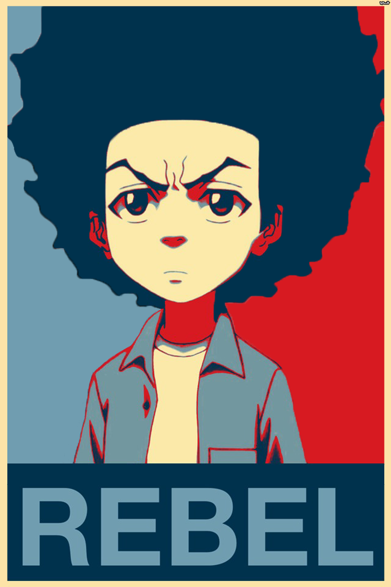

About Me
Huey Freeman is one of the main protagonists and antihero in The Boondocks. Politically sapient and borderline militant, Huey, being a self-described revolutionary left-wing radical, regularly reflects upon current events as well as the plight of African-Americans as it relates to a greater American society. As presented by his pessimistic personality, Huey's has often been described as "misanthropic" and "cynical". He is named after Huey P. Newton, one of the co-founders and leaders of the Black Panther Party.
Huey, who grew up with his younger brother Riley on the West side of Chicago, was moved along with his brother to the peaceful, predominantly white suburb of Woodcrest, Illinois by their grandfather Robert Jebediah Freeman. It is strongly believed that Huey's and Riley's birth parents are deceased.
Connect With Me